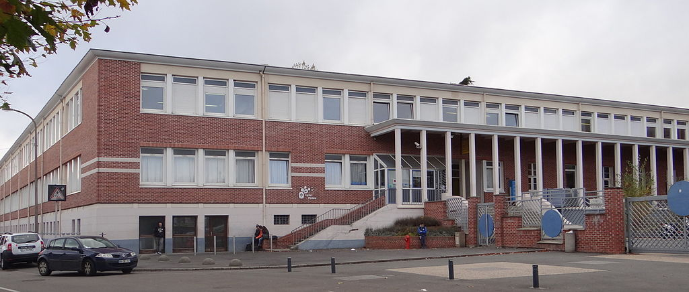

Présentation
Etudiant en DUT informatique, l'informatique est un domaine
qui m'a toujours passionné.
Mon objectif actuel est donc de développer ma carrière dans ce domaine.
Vous trouverez dans ce portfolio toutes les informations importantes me concernant.
Compétences

Logiciels

Programmation

Langues
Parcours
-
DUT Informatique
Depuis 2019
IUT de LensJ'étudie actuellement à l'IUT de Lens où je suis en 2e année de DUT informatique. En plus des compétences apportées dans le domaine de l'informatique, les cours nous ont formé dans la gestion de projet, le droit, la gestion d'entreprise...
-

BTS fluides, énergies, domotique
Première année
2017/2018
Lycée Louis Pasteur, Hénin-BeaumontAprès l'obtention de mon bac, j'ai décidé de m'orienter vers le BTS FED, qui rassemblait selon moi l'informatique et le travail manuel et qui consistait à former les étudiants dans le domaine de la domotique. A la fin de cette première année, j'ai eu l'occasion de réaliser un stage de 8 semaines. J'ai cependant décidé, une fois mon stage terminé, de me réorienter car ce BTS ne correspondait pas à mes attentes.
-

Baccalauréat STI2D
2017
Lycée Louis Pasteur, Hénin-BeaumontMes années passées en STI2D ont confirmé ma passion pour l'informatique et les nouvelles technologies. J'ai eu l'occasion durant cette formation d'apprendre certaines bases de l'informatique, et d'approfondir des connaissances en technologies. J'ai par la suite obtenu le baccalauréat avec mention bien.
Expériences
-
DUT Informatique
Depuis 2019
IUT de LensEn plus de ce portfolio, les différents projets réalisés pendant ma formation m'ont apportés de solides bases dans le développement informatique. J'ai d'abord eu l'occasion de réaliser, en groupe, la création d'un site web responsive en HTML / CSS avec l'utilisation de Bootstrap pour le projet du 1er semestre. Pour le 2ème semestre, nous devions créer un jeu avec le langage de notre choix. Nous l'avons alors réalisé à l'aide du langage Java et du framework JavaFX. De plus, étant toujours en cours de formation, de nouveaux projets vont être réalisés, comme la création d'un site web en 48H avec Laravel.
-
Manutentionnaire
2018
Travailler en tant que manutentionnaire m'a permis de mieux connaitre les attentes et exigences du monde professionnel, de développer mon travail en équipe, ma rigueur et ma ténacité
-
Robbe
2017
Ce stage dans l'installation et la configuration d'équipements de domotique, qui était ma première expérience professionnelle, a été une réelle opportunité. J'ai pu découvrir le monde professionnel dans un environnement agréable, tout en étant au contact des clients. J'ai également très vite eu la responsabilité d'installer et de configurer les équipements.